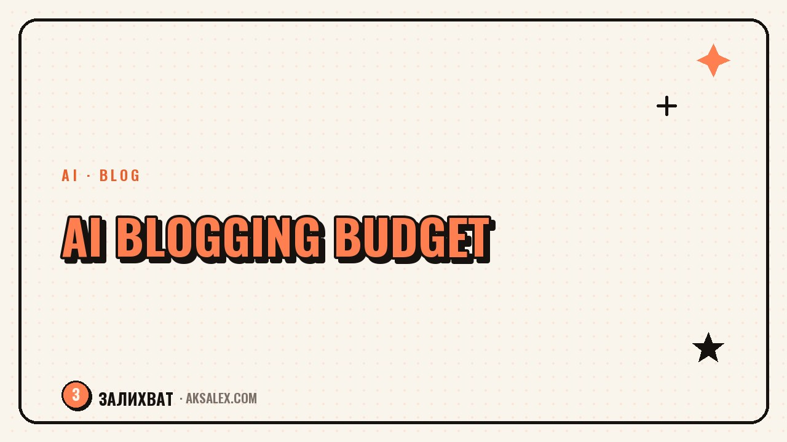

How Much It Costs to Run a Blog with AI

What makes up an AI budget
The cost of AI for a blog usually breaks into several categories, and you do not need all of them at once. Text models for post and script drafts, image generators for covers, tools for editing and voicing video, services for transcribing streams into text. A beginner blogger rarely needs all the categories at the same time.
Before paying for something new, it is worth figuring out which task currently eats the most time by hand - that is exactly where a paid tool will pay off fastest.
Payment models: what you find on the market
| Payment model | How it works |
|---|---|
| Free tier | A limited number of requests or generations per day/month |
| Fixed subscription | A monthly fee for access, usually with higher limits |
| Pay-per-result | You pay for each image, video, or minute of voiceover generated |
| One-time credit purchase | You top up a balance and spend it with no monthly tie-in |
For a blog with irregular workload, pay-per-result or one-time credits are often better value than a fixed subscription - you pay only for what you actually used, not for a month in advance.
How to tell it is time to move to a paid plan
The signal is usually obvious: free generations or requests consistently run out before the week is over, and you hit the limit at the worst possible moment - right before publishing, for example.
Questions to ask yourself before paying
- How often do I actually hit the free limit - once a week or almost every day
- Does this tool save time I can redirect to filming or sales
- Is there a free alternative with a similar result, even if less convenient
- Am I ready to pay for this regularly, not just once for a test
A paid tool is justified not when it is more convenient than the free one on its own, but when the time saved clearly exceeds its cost for your blog.
Common mistakes in budget planning
The most common mistake is collecting five or six subscriptions "just in case" and actually using one or two. Check your list of active subscriptions at least once a quarter: if you have not used a tool in a month, it is probably not needed in your current format.
- Taking out a subscription for a one-off task instead of paying per result
- Forgetting to cancel a trial that automatically rolls into a paid plan
- Stacking several tools with a similar function instead of one main one
- Not budgeting in advance and spending chaotically as ideas come up
- Cutting corners on a tool that genuinely covers a bottleneck in your process
The last point works in reverse too: if one paid tool clearly speeds up your most labor-intensive task, cutting corners on it often costs more than the time you lose.
How to budget for your own blog
It is handy to keep a simple table: the tool, the task it covers, and how often you use it. Once a month or quarter, review it - remove what you are not using and add what covers a real pain point in your process.
An AI budget does not have to grow linearly with the blog. Sometimes it is smarter to keep one good paid tool for a key task and cover the rest with free options than to scatter money across subscriptions that duplicate each other.
Bottom line: budget for tasks, not for trends
You should not subscribe to a tool just because someone wrote about it on their blog. Start with the free versions, track where you genuinely run out of capabilities, and move to a paid plan exactly there. This approach saves money and keeps the AI budget from quietly growing into a sum that the results do not justify.
Frequently Asked Questions
Where do I start if I have no AI budget at all?
With the free tiers of the main services - for text, images, and basic editing they are usually enough to start. Move to paid options only where the free limit consistently falls short.
Which is better value: a subscription or pay-per-result?
It depends on how regularly you use it. For a steady daily workload a subscription with a higher limit is often better value, and for irregular tasks - paying for a specific result or one-time credits.
How do I remember to cancel a free trial?
Set a reminder in your calendar for a day or two before the trial ends, right when you sign up. This is the most common reason for accidental spending on tools people end up not using.
Should I buy several tools for different tasks right away?
No, it is better to start with one or two for the most labor-intensive tasks and add new ones only when you feel a real lack of capabilities, not in advance as a reserve.
How do I know a tool subscription is not paying for itself?
Look at how often you used it over the last month. If you opened it a couple of times or not at all, while the cost is noticeable for your blog's budget, it makes sense to cancel and come back later if needed.
Enjoyed this one? Here's what to read next. A clear look at what to watch out for when using AI in your blog, so you don't step on anyone else's rights.
Read the article →not by hand